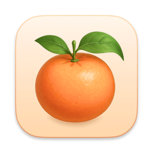

Tangerine
A small, experimental browser for Mac. Built on WebKit.
Download for macOSFree. Requires macOS 15 or later.
What it does
- Fast, familiar browsing — tabs, history, downloads, find-in-page, and a combined search-and-address bar, on top of Apple's WebKit engine.
- A tidy sidebar — tabs live in a sidebar, organized into spaces you can swipe between.
- Split view — put two pages side by side in one tab.
- Reader-friendly pages — content blocking and dark mode for websites.
- A few experiments — an optional built-in assistant and terminal tabs, for people who like that sort of thing.
Honestly
Tangerine is a personal project, made by one person, and it's early. It won't replace your main browser yet — but it's a nice place to poke around, and it gets better all the time.